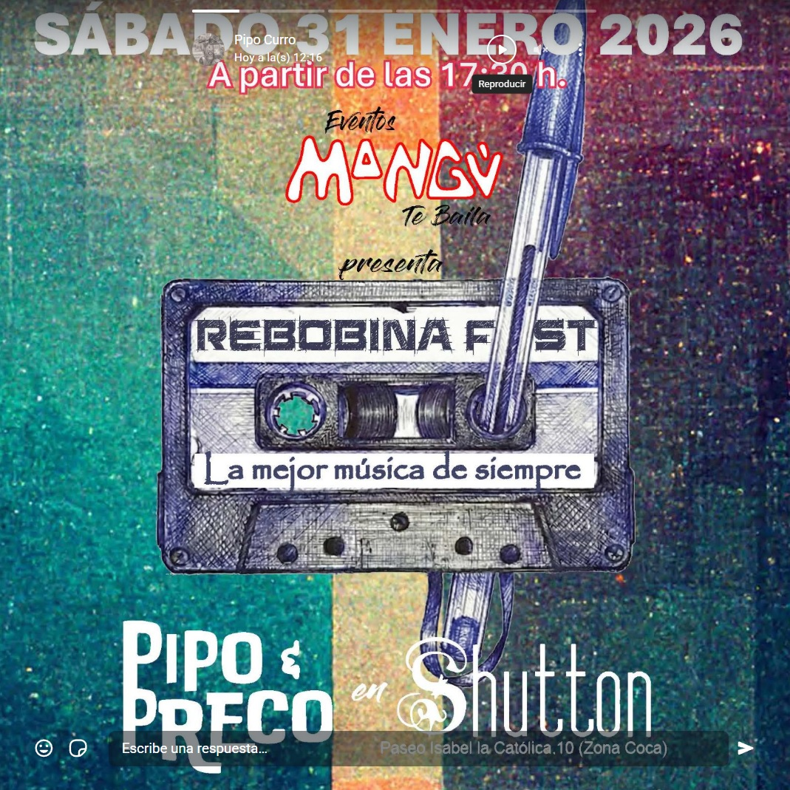
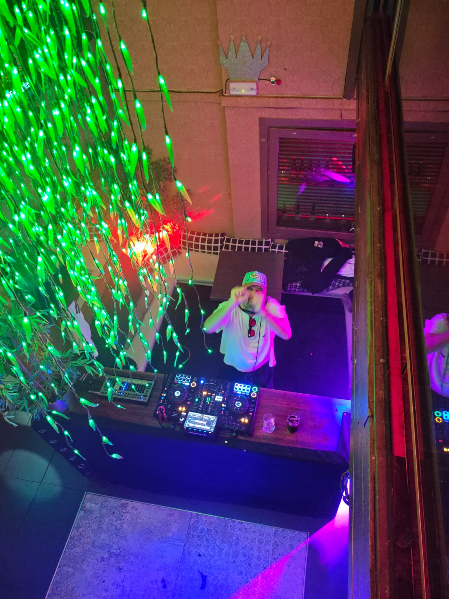
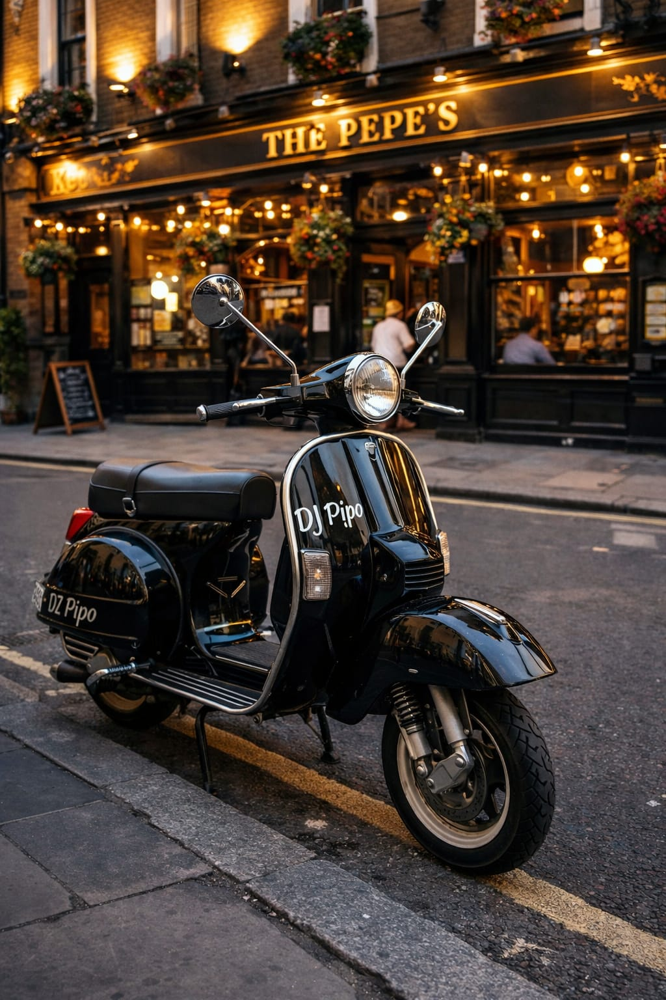
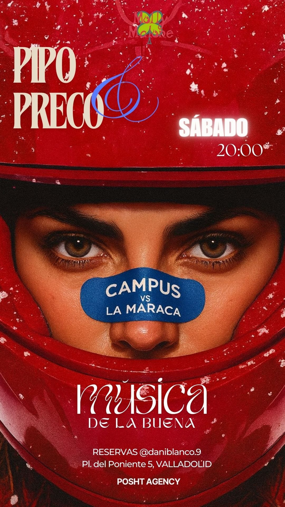
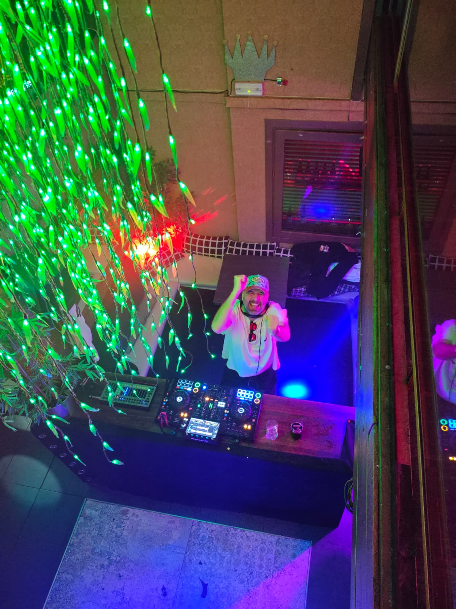

Fiestas privadas y bodas
Seleccion musical personalizada, ambiente cercano y una curva de energia preparada para todos los invitados.

Una propuesta DJ pensada para convertir cada fiesta en una experiencia cercana, potente y facil de recordar. Su formato mezcla energia house, hits populares, pop, rock, indie y sonido latino para conectar con publicos distintos sin perder ritmo.
Esta version apuesta por una estructura clasica de artista profesional: presentacion clara, servicios, galeria, datos de contratacion y formulario de contacto, con un tono muy directo para ayuntamientos, promotores, salas y eventos privados.


Formatos adaptables para fiestas populares, festivales, clubes, bodas, empresas y eventos privados.
Seleccion musical personalizada, ambiente cercano y una curva de energia preparada para todos los invitados.
Show visual, repertorio reconocible y presencia de escenario para publico amplio.
Bloques house, funk, latin y hits para mantener la pista activa de principio a fin.
Propuesta sencilla de contratar, adaptable a fiestas patronales y programaciones municipales.
Una web de este estilo necesita demostrar recorrido visual: fotos de cabina, carteleria y piezas promocionales.


Duo DJ de Espana con rango de trabajo 100-140 BPM y un repertorio abierto: Afro House, Funky House, Baile Funk, Latin Pop, Pop, Indie, Rock y otros estilos preparados para fiestas de alto recuerdo.